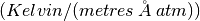
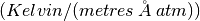

He3TubeEfficiency dialog.
Table of Contents
| Name | Direction | Type | Default | Description |
|---|---|---|---|---|
| InputWorkspace | Input | MatrixWorkspace | Mandatory | Name of the input workspace |
| OutputWorkspace | Output | MatrixWorkspace | Mandatory | Name of the output workspace, can be the same as the input |
| ScaleFactor | Input | number | 1 | Constant factor with which to scale the calculateddetector efficiency. Same factor applies to all efficiencies. |
| TubePressure | Input | dbl list | Provide overriding the default tube pressure. The pressure must be specified in atm. | |
| TubeThickness | Input | dbl list | Provide overriding the default tube thickness. The thickness must be specified in metres. | |
| TubeTemperature | Input | dbl list | Provide overriding the default tube temperature. The temperature must be specified in Kelvin. |
This algorithm corrects the detection efficiency of He3 tubes using an exponential function and certain detector properties. The correction scheme is given by the following:

where A is a dimensionless scaling factor,  is a
constant with units , P is
pressure in units of atm, L is the tube diameter in units of
metres, W is the tube thickness in units of metres, T is the
temperature in units of Kelvin,
is a
constant with units , P is
pressure in units of atm, L is the tube diameter in units of
metres, W is the tube thickness in units of metres, T is the
temperature in units of Kelvin,  is the angle
of the neutron trajectory with respect to the long axis of the He3 tube
and
is the angle
of the neutron trajectory with respect to the long axis of the He3 tube
and  is in units of
is in units of  .
.
The Optional properties that are of num list type can be used in the following manner. If no input value is given, the detector parameter is pulled from the detector itself. If a single value is used as input, that value is applied to all detectors. If an array of values is used, that array must be the same size as the number of spectra in the workspace. If it is not, the spectra indices that do not have values will be zeroed in the output workspace.
The input workspace must be in units of wavelength.
The correction applies equally well to histogram and event workspaces. An example for a histogram workspace will be given.
# create workspace with correct units
ws = CreateSampleWorkspace(Function='Flat background',NumBanks='1',BankPixelWidth='2',
XUnit='Wavelength',XMax='10',BinWidth='0.01')
# workspace does not have correct tube parameters, so we need to provide some
# parameters taken from the ARCS instrument at the SNS
ws1 = He3TubeEfficiency(ws, TubePressure='10',TubeThickness='0.0008',TubeTemperature='290')
# show the before and after for the first detector for the first 5 bins
print('Original counts: {}'.format(ws.readY(0)[:5]))
print('Corrected counts: {}'.format(ws1.readY(0)[:5]))
Output:
Original counts: [ 1. 1. 1. 1. 1.]
Corrected counts: [ 417.07353051 139.35837696 83.81566631 60.01187609 46.787726 ]
Categories: AlgorithmIndex | CorrectionFunctions\EfficiencyCorrections
C++ header: He3TubeEfficiency.h (last modified: 2018-12-12)
C++ source: He3TubeEfficiency.cpp (last modified: 2019-11-08)